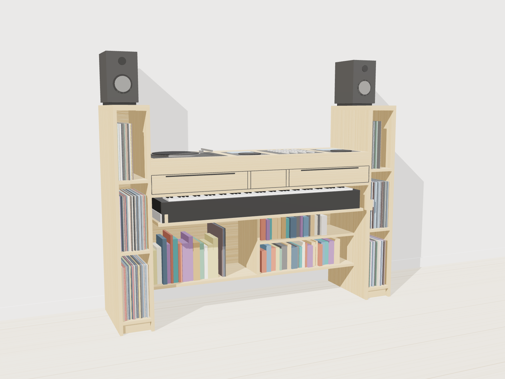

Design package for the carpenter. Version 2.0 — flush-mounted gear, 15 September 2026. All dimensions in centimetres unless marked mm. Light natural oak, matte oiled.
One piece, 185 cm wide, that holds a DJ set-up on top at standing height, a stage piano on a pull-out tray at seated height, about 160 records in two end columns, books in two open compartments, two drawers with a power niche between them, and two studio monitors on caps at the top of the columns. The middle section floats 20 cm above the floor so a sustain pedal and feet fit underneath.
| Item | Value |
|---|---|
| Overall | 185 wide × 50 deep × 130 high (caps). DJ surface at 100. Footprint is the same at every height: the caps are flush with the columns. |
| Bay (between wings) | 145 wide. Gear span 145, keyboard tray 141.2 overall including aprons, keyboard 133. |
| Wings | 20 wide each, 16.4 clear inside, full height to 127, cap 20 × 50 × 3 on top. |
| Keyboard tray | Top face 63, underside 61.2, extension 40, tray 137.6 × 42. Key tops about 74 (piano height). |
| Recess | 20 clear, full bay width, open to the wall. |
| Depth budget | 48.2 usable inside the bay, 1.8 back panel flush with the rear face. Front rail 5, deepest well 36.2, back rail 7.0. Wings use the full depth (48.2 inside). |
| Wall gap | 5 behind the back panel, mandatory: the panel stops at 91 and the trough's whole rear is open, venting into that gap. Allow 55 of floor depth, not 50. Dimensioned on the section and the plan. |
| Panel thickness | 18 mm carcass, 30 mm top and caps over a 60 mm fascia, 15 mm drawer boxes. |
| Storage | About 160 records in the wings (six openings, 6 mm per sleeve; 190 if mostly single sleeves), two book compartments of 71.6 cm, two drawers. Each book compartment holds about 110 more LPs if wanted. |
| Weight, empty | Roughly 120 to 130 kg. Loaded with records, books and gear about 250 kg. Spread over the two wings and the floating bay. |
| Zone | Height (cm) | Contents |
|---|---|---|
| Speaker caps | 127 to 130 | Two 5-inch monitors on isolation pads, one per wing. Cap 20 × 50 cm, 30 mm oak, flush with the column on every side. A KRK Rokit 5 (18.5 wide) leaves 7 mm each side. |
| DJ surface | 100 (slab 91 to 100) | Turntable, XDJ-700, Xone:92, XDJ-700 left to right within the 145 cm bay, each sunk into a well that gives 9 cm of clearance below its faceplate — not below its overall height. Faceplates finish flush with the oak. Front rail 5 cm, oak webs about 5.6 cm. Dust covers cannot be fitted. |
| Drawer band | 80 to 89.2 | Two flush drawers of 58.7 cm (9.2 cm high) with a 24 cm power niche between them: push-to-open door, strip and bricks inside, open at the top into the cable trough. |
| Cable trough | 91 to 97 | Continuous under the back rail, full 145 cm bay, 7 cm deep behind the Xone:92 and 12.2 behind the XDJs. Every well opens into it. Its own rear face is open too, 145 × 6 cm, so air enters and leaves along its whole length into the 5 cm wall gap; also the mixer's ventilation. |
| Keyboard slot | 63 to 78.2 | Pull-out tray, top face at 63 cm, 40 cm extension on heavy-duty slides. Keyboard 133 × 35 × 12 stowed inside, 3.2 cm air above it. |
| Book compartments | 21.8 to 61.2 | Two openings 71.6 wide × 39.4 tall × 33.2 deep, one adjustable shelf each. Front plane set back 15 cm from the console face for seated shin clearance. Still takes a 31.4 cm LP sleeve, with 1.8 cm to spare. |
| Recess | 0 to 20 (to 61.2 at the front) | Open across the whole bay and through to the wall: sustain pedal and feet when seated, toe space when standing. The front 15 cm stands open right up to the tray underside, so the shins clear the shelving. |
| Wing columns | 7.8 to 127 | Three openings per wing, 16.4 wide × 38.5 tall × 48.2 deep, records spine-out, about 27 per opening at 6 mm each, about 160 in total. |
| Device | W × D × H overall (cm) | Height below the faceplate (cm), must fit 9 | Position from left wing inner face (cm) |
|---|---|---|---|
| Turntable | 45.3 × 35.3 × 16.2 | measure this unit | 3 to 48.3 |
| XDJ-700 | 21.8 × 30.6 × 11.1 | measure this unit | 54.3 to 76.1 |
| Xone:92 | 32 × 35.8 × 10.7 | measure this unit | 82.1 to 114.1 |
| XDJ-700 | 21.8 × 30.6 × 11.1 | measure this unit | 120.1 to 141.9 |
Positions assume a Technics-size turntable (45.3 × 35.3), an Allen & Heath Xone:92 and two Pioneer XDJ-700 with 6 cm gaps and 3 cm end margins. Re-measure your own units before cutting: each well is templated to its unit with only 2 mm clearance per side, so the cut-outs depend on it directly. The H column is each unit's overall height, everything included — the turntable's 16.2 is mostly its dust cover, which cannot be fitted once the deck is sunk. Overall height is not what the well has to swallow. What the well gives is 9 cm of clearance below the faceplate, from the faceplate line at 100 down to the well floor at 91, and it is each unit's own chassis height below its own faceplate that has to fit in that. Measure it on all four units before cutting; the well floor cleats then take up the difference, but only ±10 mm.
| Group | Part | Qty | Size L × W (cm) | Thk (mm) | Material | Notes |
|---|---|---|---|---|---|---|
| Wings | Wing side panel | 4 | 127 × 50 | 18 | Oak-veneered birch ply, front edge lipped | Floor to cap underside. Inner pair is also the bay side wall. Grain vertical. |
| Wings | Wing bottom shelf | 2 | 48.2 × 16.4 | 18 | Oak-veneered ply | Top face at 7.8 cm (plinth 6 cm below). |
| Wings | Wing fixed shelf | 4 | 48.2 × 16.4 | 18 | Oak-veneered ply, front edge lipped | Two per wing, giving three openings of 38.5 cm clear. |
| Wings | Wing back panel | 2 | 119.2 × 16.4 | 18 | Oak-veneered ply | Flush with the rear edge (no chase in the wings). |
| Wings | Wing plinth board | 2 | 16.4 × 6 | 18 | Solid oak | Set back 3 cm from the front. |
| Wings | Speaker cap | 2 | 50 × 20 | 30 | Solid oak | Same footprint as the column, flush on every side. Screwed from below through the wing panels. |
| Bay | Top | 1 | 145 × 50 | 30 | Solid oak, or 30 mm veneered board with 30 mm oak lipping | Four cut-outs for the gear, all front edges 5 cm from the front edge. Sizes per the plan; 2 mm clearance at sides and rear, none at the front. Finger notches r 20 mm at two corners of each. Edges eased, not lipped. |
| Bay | Slab fascia | 1 | 145 × 6 | 60 | Solid oak | Front face, returned on both ends. Bottom edge at 91, flush with the well floors. Makes the top read as a 9 cm slab. |
| Bay | Well side wall | 8 | 7.8 high, depth per well | 18 | Oak-veneered ply | Two per well, hung from the underside of the top board down to 89.2, the well floor's underside: the bottom 18 mm of each wall houses the floor and carries its cleat. Glued to the top board: this is what stiffens the webs between the wells. Depth per well: Turntable 35.7, XDJ-700 31, Xone:92 36.2, XDJ-700 31 cm. See Detail B for the section. |
| Bay | Well rear wall | 3 | 6 high, width per well | 18 | Oak-veneered ply | One per player well only: the turntable and both XDJ-700s. Each is notched 12 × 6 cm for cables — 12 cm wide, centred on the well, cut from the well floor at 91 clear up to the top board, so a plug passes without being lifted. The Xone:92's well has no rear wall at all: its whole rear face, 32.4 × 6 cm, stands open into the trough, which is how the mixer sheds its heat. Width per wall: Turntable 45.7, XDJ-700 22.2, XDJ-700 22.2 cm. See Detail B for the section. |
| Bay | Well floor | 4 | width × depth per well | 18 | Oak-veneered ply | Top face at 91, underside at 89.2 — the ceiling of the drawer band. On adjustable cleats, slotted +/- 10 mm, so the flush line is set against the real units at fit-out. Width × depth per well: Turntable 45.7 × 35.7, XDJ-700 22.2 × 31, Xone:92 32.4 × 36.2, XDJ-700 22.2 × 31 cm. See Detail B for the section. |
| Bay | Well floor cleat | 8 | 20 × 14 mm, length per well | 20 | Solid oak | Two per well, front to back on the side walls, slotted screw holes. Top face at 89.2 so the floor lands at 91 and nothing stands proud of it. Length per well: Turntable 35.7, XDJ-700 31, Xone:92 36.2, XDJ-700 31 cm. See Detail B for the section. |
| Bay | Bay bottom panel | 1 | 145 × 35 | 18 | Oak-veneered ply, front edge lipped | Top face at 21.8 cm. Front edge set back 15 cm from the front plane for shin clearance; the recess is therefore open from the floor to the tray underside across that 15 cm. Carries the books; stiffened by the divider and the back panel, no rail underneath. |
| Bay | Fixed mid panel | 1 | 145 × 48.2 | 18 | Oak-veneered ply, front edge lipped | Top face at 80 cm. Ceiling of the keyboard slot, floor of the drawer band. |
| Bay | Bay back panel | 1 | 145 × 69.2 | 18 | Oak-veneered ply | Flush with the rear face, top edge at 91: there is no panel above that, so the trough's rear face stands open across the whole bay, 145 × 6 cm. That opening is how the trough breathes and how the leads leave. Cutout 20 × 8 cm behind the tray at 66 to 74 cm; cutout 24 × 8 cm behind the niche at 83 to 91 cm. The niche cutout runs out at the panel's top edge, where the open trough takes over. |
| Bay | Book zone divider | 1 | 33.2 × 38.9 | 18 | Oak-veneered ply, front edge lipped | Centred. Glued and screwed to bottom and back panel along its length; 5 mm gap under the tray. |
| Bay | Drawer band divider | 2 | 48.2 × 9.2 | 18 | Oak-veneered ply, front edge lipped | Frame the 24 cm power niche. Optional 6 × 4 cm pass-through at the rear of each for a charging lead. |
| Bay | Power niche door | 1 | 23.6 × 8.8 | 18 | Solid oak, grain continuous with the drawer fronts | Flush inset, concealed hinges, push-to-open latch, 1 cm vent gap at the bottom edge. |
| Bay | Adjustable shelf | 2 | 71.4 × 32.2 | 18 | Oak-veneered ply, front edge lipped | One per book compartment, on 5 mm pins. |
| Bay | Drawer front | 2 | 58.3 × 8.8 | 18 | Solid oak (grain running across both fronts) | Flush inset, 2 mm gaps, finger pull routed under the top edge. |
| Bay | Drawer box | 2 | 45 deep × 7 high, width per runner spec | 15 | Birch ply, 6 mm bottom | For the 58.7 cm openings, sized to the runners. The 45 cm depth is matched to 450 mm undermount runners: an undermount pair only engages a box of its own length, so the 400 mm runners used in v1 will not do. 7 cm sides in the 9.2 cm band leave 22 mm below and above the box for the runner and its clearances — check against the runner's own drilling diagram before cutting. Notch the niche-side wall 6 × 4 cm at the rear if the pass-through is used. |
| Tray | Keyboard tray panel | 1 | 137.6 × 42 | 18 | Oak-veneered birch ply, both faces | Underside is visible from the book compartments: finish it. Front edge lipped. |
| Tray | Tray side apron | 2 | 42 × 6.8 | 18 | Solid oak | Covers the tray edge (1.8) and rises 5 cm above it. Slide drawer member screws into it. |
| Tray | Tray rear rail | 1 | 137.6 × 5 | 18 | Solid oak | On the tray top along the rear edge, doweled to the aprons. Stops racking. |
| All | Solid oak lipping | ~28 m | 5 × 18 mm | Solid oak | All exposed ply edges. |
| Item | Qty | Specification |
|---|---|---|
| Keyboard tray slides | 1 pair | Heavy-duty full-extension ball-bearing, 400 mm, rated 100 kg or more per pair, with hold-open detent. Accuride 3634 (400 mm) or Fulterer FR 5000 (400 mm). Side mount at 63 to 68 cm. |
| Drawer runners | 2 pairs | Full-extension undermount with soft close, 450 mm, 40 kg class: Blum Movento 760H4500S with Blumotion, or Hettich Actro 5D 450 mm. Not the 400 mm pair used in v1 — an undermount runner is matched to its box, and a 45 cm box will not engage a 400 mm runner. Confirmed against the interior: a 450 mm runner wants about 470 mm of clear depth and the bay gives 482 mm, so it fits with about 12 mm to spare. |
| Shelf pins | 8 | 5 mm steel, for two adjustable shelves. Drill 32 mm pitch, 37 mm from front and rear edges. |
| Levelling feet | 8 | M8 adjustable glides, 15 to 25 mm, two per wing side panel, hidden behind the plinth boards. |
| Anti-tip brackets | 2 | One per wing, concealed, fixed to the wall. Recommended: the wings are 130 cm tall with speakers on top. In v2 it doubles as a spacer: pack it out to 5 cm so it holds the console that far off the wall rather than pulling it flush. The trough's open rear vents into that gap, so closing it would seal the mixer in. |
| Speaker isolation pads | 2 | IsoAcoustics ISO-155 or Auralex MoPAD, set with a slight upward tilt toward the standing position. |
| Headphone hook | 1 | Black steel or oak, on the outer face of the right wing at about 105 cm. |
| Power strip | 1 | 6-way with switch, up to 40 cm long, or two 4-way strips side by side. Lies flat on the niche floor with sockets facing up. Niche is 24 wide × 9.2 tall × 48.2 deep, its rear 7 cm open at the top into the cable trough and the rest ceilinged by the well floors. Stand the bricks on the niche floor beside the strip, toward the rear — 41.2 to 48.2 cm back from the front, past the point where the well floors stop. There the trough is open overhead and the headroom is 17 cm, up to the underside of the back rail at 97, so brick height is not a constraint at that position. Do not stack a brick on the strip: that reaches about 12.5 cm above the niche floor, to 92.5, which fouls the well floor if it is anywhere near the front of the niche and blocks the trough if it is at the rear — and the trough has to stay clear as the route for the mains lead out through the niche cutout at 83 to 91 cm. Height only matters if a brick has to sit at the front of the niche instead, under a well floor: 9.2 cm of headroom there, which an 8.5 cm brick clears by 7 mm. |
| Niche door hardware | 1 set | Two concealed hinges (Blum Clip top or similar) and a push-to-open latch (Blum Tip-On), so the door needs no handle. |
| Drawer pass-through grommets | 2 (optional) | Rubber or oak-lined 60 × 40 mm grommets in the drawer-band dividers, for charging leads from the strip into the drawers. |
| Non-slip mat | 1 | Thin rubber or EVA sheet, about 133 × 35 cm, under the keyboard. |
| Carcass fixings | as needed | 8 mm dowels and glue at all visible joints; concealed confirmat screws where hidden (behind drawers and tray). Slide screws per manufacturer. |
| Finish | about 1 L | Osmo Polyx-Oil 3062 Matt, two coats, or Rubio Monocoat Oil Plus 2C Pure (about 350 ml). Natural oak tone, no stain. |
| Well floor cleats and fixings | 8 cleats | M5 threaded inserts and pan screws in slotted holes, +/- 10 mm of travel, so each unit's flush line is set at fit-out rather than at cutting. |
Computer-generated view built from the drawing geometry (Three.js). Materials, lighting and gear details are indicative; the drawings govern.
